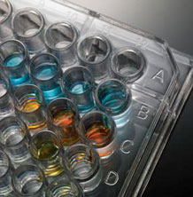

Bun venit la Cabintetul Medical Arges.

Laboratorul Medilab Pitești este echipat cu aparatură de ultimă generație putând prelucra o cantitate impresionanta de probe biologice zilnic.
Tehnologia modernă și echipa de specialiști sunt garanția efectării analizelor medicale de laborator cu responsabilitate și acuratețe pentru ca pacienții noștri să beneficieze de rezultate corecte și rapide pentru toate indiferent de departamentul de laborator căruia i se adresează.
Ne puteti contacta aici: Contact.
-
hematologie
Extragere de sange rapida, pentru diferite teste.
read more
-
Vaccinare COVID
Rapid si eficient, pe gratis.
read more
-
radiografie
Rezultate clare si eficiente, asistate de cei mai buni doctori.
read more
-
patologie si adn
Examinam boli cu cele mai avansate aparate, pentru sanatatea ta.
read more